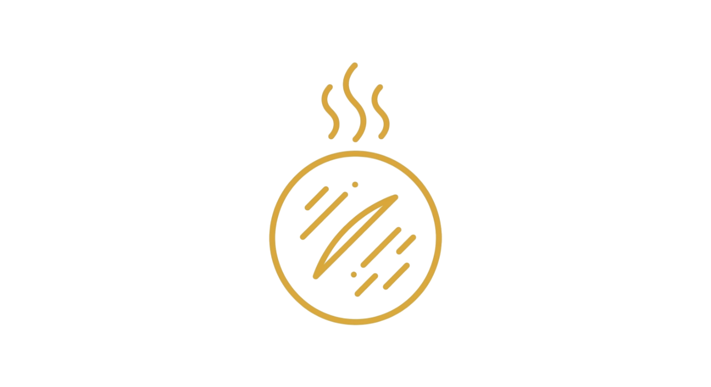
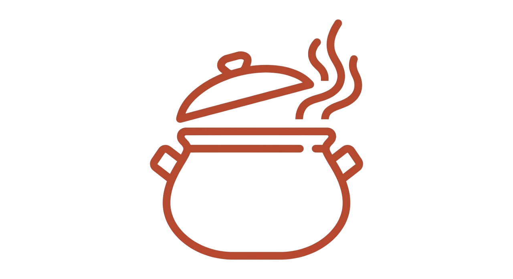
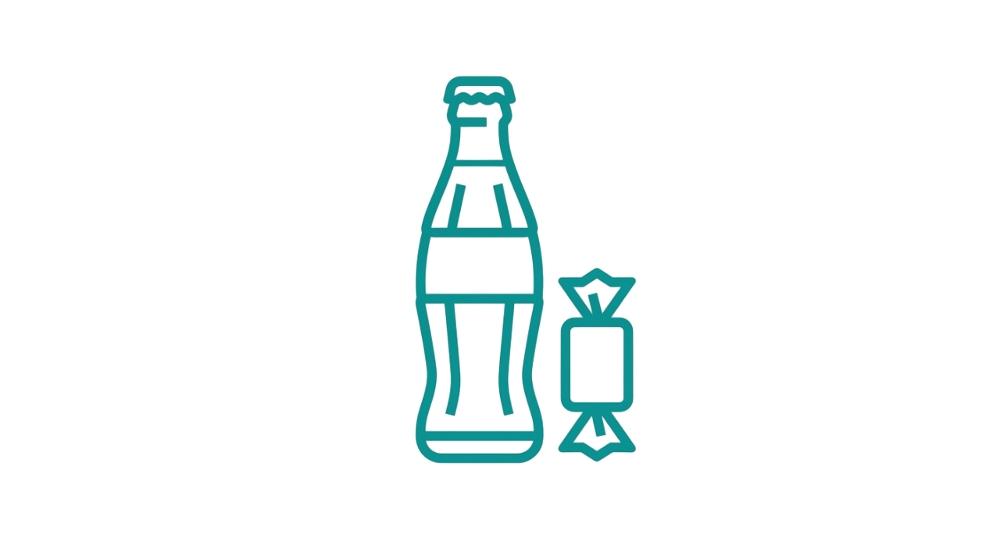

Dos naciones, una pasión por la comida
Descubre los sabores auténticos que definen la cocina venezolana y colombiana


La mesa está servida
Un viaje culinario desde las arepas hasta los dulces que han alimentado familias por siglos.

La reina de la Mesa
Desde la arepa de huevo costeña hasta la reina pepiada caraqueña. Aquí el maíz es ley.

El Plato Fuerte
Pabellón, Bandeja Paisa y Ajiaco. Esos sabores que te hacen sentir en casa, estés donde estés.

El Kiosko Binacional
Maltín, Postobón, Chocorramo y Samba. El rincón de los antojos que nos une a todos.
Lo que dicen los comensales
Quiénes han probado nuestras recetas y se han sentido como en casa
"Estas recetas me devolvieron los sabores de mi infancia, exactamente como los recordaba."
"Encontré aquí la forma correcta de preparar lo que mi abuela hacía, paso a paso."
"Un sitio que respeta la verdadera esencia de nuestra gastronomía sin pretensiones. Recomendado."
Despeja tus dudas
Todo lo que necesitas saber sobre ingredientes, técnicas y nuestra historia.
¿Cuál es la arepa correcta?
La arepa es harina de maíz blanco, agua y sal. Cada región tiene su forma de hacerla, pero el secreto está en la masa bien trabajada y el fuego justo. No hay una sola verdad, hay tradición.
¿Dónde consigo maíz de calidad?
El maíz debe ser blanco y molido fresco. Busca en mercados locales o tiendas especializadas en productos latinoamericanos. La calidad del grano define el sabor final de tus preparaciones.
¿Cómo preparo un buen pabellón?
Carne deshilachada, frijoles negros, arroz blanco y plátano maduro frito. Cada elemento debe respetarse en su sabor. Es un plato que requiere paciencia y buenos ingredientes.
¿Qué bebida acompaña mejor?
Un Maltín Polar frío o un Postobón son clásicos que funcionan. También puedes optar por un jugo natural de frutas tropicales. La bebida debe refrescar sin competir con el plato.
¿Cuánto tiempo dura la masa?
La masa de arepa se usa fresca, idealmente dentro de la primera hora. Si la dejas reposar, puede secarse. Lo mejor es prepararla cuando vayas a cocinar.
¿Cómo hago dulce de leche casero?
Leche, azúcar y paciencia. Cocina a fuego bajo durante horas, revolviendo constantemente. El punto perfecto es cuando toma color caramelo y se espesa sin quemar.
¿Puedo congelar las recetas?
Algunos platos congelan bien, otros pierden textura. Las masas crudas se conservan mejor que los platos ya cocinados. Siempre etiqueta con la fecha para no perder la referencia.
¿Qué hace única la gastronomía binacional?
Comparten historia, clima y productos, pero cada nación desarrolló técnicas propias. Venezuela enfatiza el maíz, Colombia el café y las montañas. Juntas cuentan la verdadera historia del Caribe.